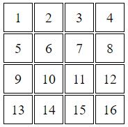
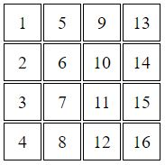

№1 Дан массив. Выведите все варианты перестановки элементов этого массива.
№2 Напишите код, который нарисует радугу на канвасе.
ЗАДАНИЕ НЕ ВЫПОЛНЕНО
№3 Даны два инпута и кнопка. По клику на кнопку выведите список список ul всех дружественных чисел из промежутка, заданном значениями инпутов.
№4 Дана форма с инпутами, текстареа, чебоксами, радиокнопками и селектами. Юзер как-то изменяет элементы формы. Сделайте так, чтобы после перезагрузки окна браузера все элементы формы пришли в то состояние, в котором их оставил юзер.
№5 Дана квадратная HTML таблица произвольного размера. По нажатию на кнопку транспонируйте ее, то есть завалите ее на бок. Посмотрим на примере. Пусть у нас есть вот такая таблица:  После транспонирования она должна превратится в следующую: 
ЗАДАНИЕ НЕ ВЫПОЛНЕНО